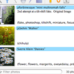
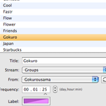
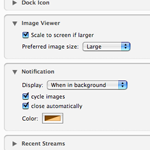
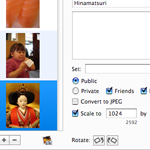
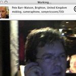
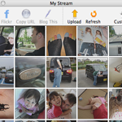

A sample set of screen captures (click to see the larger images):
-

Recent Streams
The main window lists the most recent images for the current stream or all streams. To switch between streams you can use the pop-up menu in the bottom of the window or, much quicker, using the left and right arrow keys. The search box lets you quickly filter out images based on title, description, username, or tags.
-

Stream Settings
You can set up as many streams as you want to monitor your favorite tags, groups, contacts, or Flickr's interestingness photos. Each stream can have its own update frequency and label.
-

Preferences
Naturally, 1001 can be fine-tuned for usage that is most optimal for you.
-

Upload Window
The uploader is compact, yet powerful. You can upload one photo at a time or in batches. Each photo or selected set of photos can be assigned a title, description, a set, a group, privacy settings and tags. Photos can also be scaled and/or rotated.
-

Image Viewer
When you double-click a thumbnailed photo in the streams window or when you press the return key, a viewer window pops up showing the large version of the selected photo. Clicking the user icon will take you to his or her Flickr page.
-

My Stream
1001 has a separate window for the latest twenty photos from your own Flickr page. You can use this to select one of your uploaded photos and blogging about it using the "Blog This" toolbar button.

{kind=link}
{kind=link}
{kind=link}
{kind=link}
{kind=link}
{kind=link}